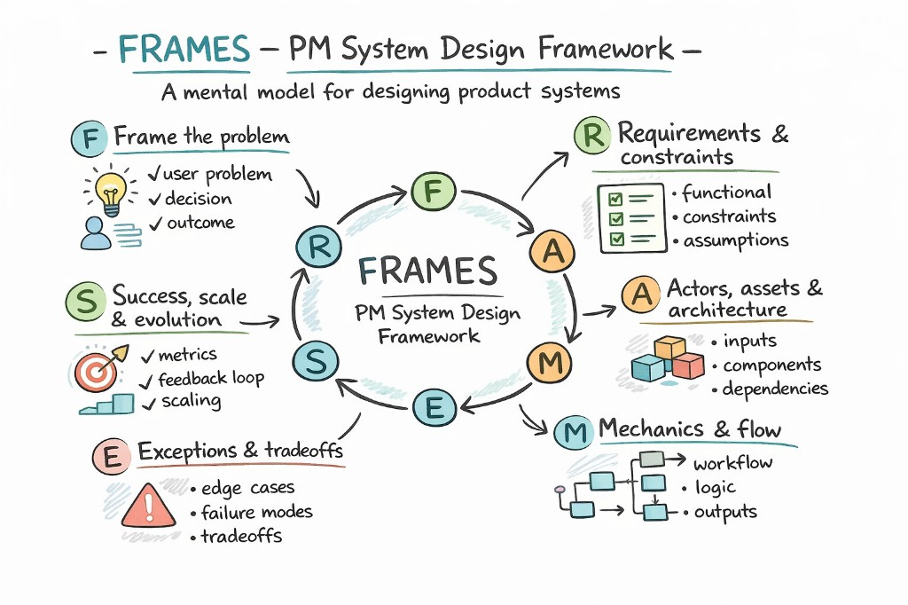

Frame the problem
Clarify the user problem and the decision being made.
- User problem
- Primary user
- Journey stage
- Decision being made
- Desired outcome
- Success metric
Most effective when the problem can be structured into inputs, logic, and outputs.

Clarify the user problem and the decision being made.
Define what must be true for the system to work.
Map system components, dependencies, and what persists.
Describe the workflow and logic that produces outputs.
Plan for edge cases, failure modes, and unavoidable tradeoffs.
Define success now, and how the system changes at scale.
See how FRAMES is applied to design a real product system.
View case ↗